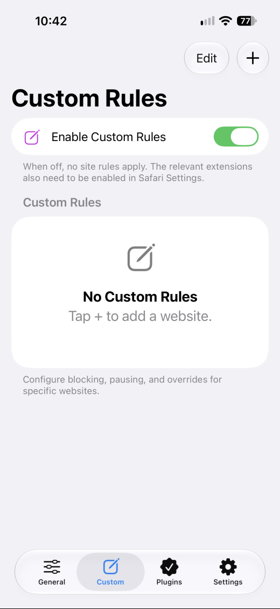

La risposta breve, senza le solite cautele: non gli annunci dentro il video. Un blocco dei contenuti per Safari funziona rifiutando richieste e nascondendo elementi di pagina, e un pre-roll non somiglia a nessuno dei due. Fa parte dello stesso flusso media del video su cui hai toccato, composto sui server di YouTube e consegnato dall’indirizzo di YouTube. Non c’è una richiesta separata da rifiutare e nessun elemento da nascondere: non è semplicemente una cosa a sé.
Quindi, se un blocco che fa tacere il resto del web qui non fa nulla, non c’è niente di rotto. Sta facendo esattamente ciò che riesce a raggiungere, e questa è la parte che non raggiunge.
In breve: gli annunci dentro il video — pre-roll, mid-roll, i clip sponsorizzati tra un capitolo e l’altro — non possono essere bloccati da un blocco dei contenuti per Safari. Ciò che può diventare più tranquillo è tutto ciò che circonda il player: banner, scaffali promossi, pannelli, il disordine dei commenti. Gli altri siti video sono spesso diversi, perché molti chiedono i loro annunci separatamente.
Perché l’annuncio non è una richiesta separata
Un banner su un sito di notizie è una richiesta al server di un’altra azienda. Rifiutala e lo spazio resta vuoto. Un pre-roll di YouTube non è così. YouTube lo inserisce nella risposta video dalla sua parte, quindi quando il flusso arriva al tuo iPhone annuncio e video sono una cosa continua da un solo indirizzo. Una lista di filtri può solo dire «non caricare questo indirizzo» o «nascondi questo elemento». Nessuna delle due si applica.
È lo stesso nell’app e nel browser: l’app e youtube.com ricevono lo stesso flusso. I 30 secondi di attesa sono dentro il video, non in un riquadro disegnato sopra.
Cosa fa AdFence su una pagina di YouTube
La pagina intorno al player è web normale: immagini, script, pannelli e scaffali di video consigliati, in gran parte provenienti da luoghi che una lista di filtri conosce già. Con le estensioni attive quella parte diventa decisamente più tranquilla: meno righe sponsorizzate, niente banner in alto, meno tracciamento intorno alla pagina. Ricarica la pagina dopo aver cambiato un interruttore, così le nuove regole si applicano.
Vale la pena dire chiaramente cos’è e cosa non è: una pagina più pulita e meno tracciamento intorno a un video, non un player senza pubblicità — e nessuna impostazione dell’app lo trasformerà in uno.
L’app YouTube non è Safari
Su iPhone e iPad l’app YouTube gira fuori da Safari e non può usare le estensioni di Safari. Nemmeno il browser che si apre quando tocchi un link di YouTube dentro un’altra app. L’estensione esiste solo dentro Safari, quindi se guardi nell’app niente di tutto questo vale — compresa la pulizia della pagina. Se vuoi la pagina più tranquilla, apri youtube.com in Safari.
Gli altri siti video sono spesso diversi
YouTube non è tutti i siti video. Molti editori affittano il loro player e i suoi annunci da qualcun altro, e l’annuncio arriva come richiesta separata a un ad server — esattamente il tipo di richiesta che una lista di filtri può rifiutare. Il modo rapido per distinguerli:
- L’annuncio è un clip a parte, con il suo conto alla rovescia e i suoi comandi del player — spesso bloccabile, perché qualcosa di esterno ha dovuto caricarsi.
- L’annuncio arriva come parte di un unico flusso continuo, e il player si comporta come se non fosse cambiato nulla — inserito come su YouTube, e non bloccabile da Safari.
È per questo che un blocco può rendere un sito senza pubblicità e lasciarne un altro intatto, senza che nessuna impostazione sia sbagliata.
Regolare un solo sito
Se una pagina continua a mostrare un elemento che preferiresti non vedere, AdFence ha strumenti per sito. Apri Site Settings per quell’indirizzo: Pause Blocking si ritira del tutto, mentre Custom Element Blocker ti lascia aggiungere un singolo elemento. Le regole che crei si raccolgono nella scheda Custom, dove puoi rivederle o eliminarle.

Se restano annunci che dovrebbero sparire
Il caso del video è chiarito, ma gli altri annunci dovrebbero andarsene. Controlla in quest’ordine — il controllo dell’estensione da 30 secondi viene per primo:
- L’estensione è attiva in Safari. Safari ha un interruttore proprio, e gli aggiornamenti possono spegnerlo.
- L’interruttore principale è attivo. Blocking in cima alla scheda General deve essere attivo; altrimenti ogni estensione carica una lista di regole vuota.
- Il sito è in pausa. La scheda Custom elenca ogni sito in pausa; ciò che c’è resta in pausa finché non lo rimuovi.
- Sei in Safari, non in un browser integrato. I link aperti da altre app usano il loro browser, dove nessuna estensione viene eseguita.
- Le liste di filtri sono più vecchie dell’ultima modifica del sito. Le liste si aggiornano con gli aggiornamenti dell’app, non in continuo.
Cosa toglie davvero i pre-roll
Su iPhone, iPad e Mac il modo affidabile è l’offerta a pagamento di YouTube, che toglie gli annunci nell’app e sul sito. È un fatto su come viene consegnato il video, non un limite di questa app: un blocco dei contenuti è un file di regole che Safari applica a richieste ed elementi di pagina, e l’interno di un flusso video non è né l’uno né l’altro. Se un’app dell’App Store promette il contrario, guarda bene cosa cambia davvero — non lo fa con le API di blocco dei contenuti di Safari.
Quello che AdFence può fare è far tacere il resto del web, compresa la pagina intorno a un video. È una promessa più piccola di quella di alcune pubblicità, ed è quella che regge.
Domande frequenti
AdFence blocca gli annunci di YouTube?
Blocca la pubblicità intorno a un video — banner, scaffali promossi, pannelli e il disordine della pagina — ma non gli annunci pre-roll e mid-roll dentro il video stesso. Fanno parte dello stesso flusso del video, quindi non c’è una richiesta separata che un blocco dei contenuti possa rifiutare.
Perché alcuni dicono che un blocco per Safari toglie gli annunci di YouTube?
A volte intendono la pagina intorno al player, che effettivamente diventa più tranquilla. Altre volte descrivono un altro tipo di strumento — un browser o un filtro del traffico fuori da Safari — che non è ciò che un blocco dei contenuti per Safari è, né può esserlo.
Usare il sito YouTube invece dell’app aiuta?
Non per gli annunci dentro il video. Il sito e l’app ricevono lo stesso flusso, e un blocco dei contenuti non può modificarlo. Il sito però beneficia della pulizia della pagina, che l’app non può offrire affatto perché non esegue estensioni di Safari.
C’è qualcosa che toglie i pre-roll?
Su iPhone e iPad il modo affidabile è l’offerta a pagamento di YouTube, che toglie gli annunci nell’app e sul web. Le estensioni di Safari non possono, e un’app che lo promette o sta facendo qualcosa fuori dal modello di blocco dei contenuti o sta descrivendo una funzione che non regge.
Gli annunci sugli altri siti video sono diversi?
Spesso sì. Molti siti chiedono i loro annunci video separatamente a un ad server, e quelle richieste possono essere rifiutate come qualsiasi altra. Il segnale è se l’annuncio è un clip a parte con il suo conto alla rovescia o arriva come parte di un unico flusso continuo.